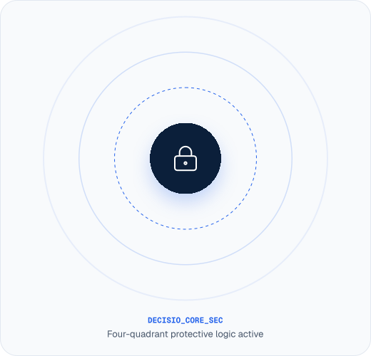
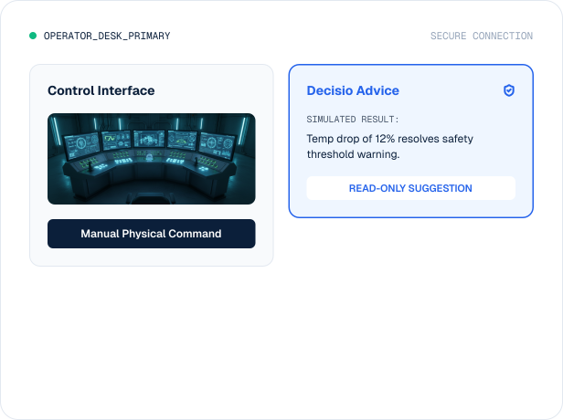
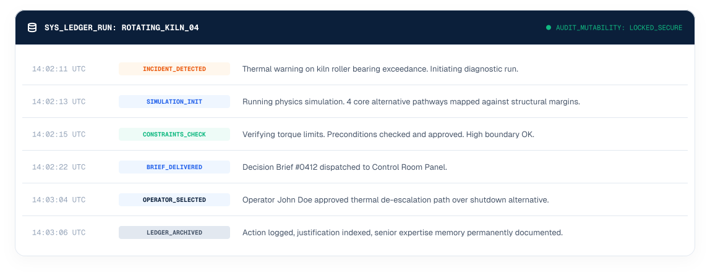

Warnings
When risk is detected, Decision immediately flags the concern with clear, contextual warnings. Operators can see exactly what triggered the alert and why it matters before any recommendation is made.

When risk is detected, Decision immediately flags the concern with clear, contextual warnings. Operators can see exactly what triggered the alert and why it matters before any recommendation is made.
Every recommendation carries a set of preconditions that must be verified before action. These aren’t optional—they’re gating requirements drawn from SOPs, safety protocols, and site-specific rules.
When a proposed action would violate a hard safety constraint, Decision blocks the recommendation entirely. No workaround, no override. The constraint is absolute.
Certain situations require a higher authority. Decision recognizes when a decision crosses the current operator’s scope and enforces escalation with full context passed upward—no shortcuts.
Decisio is an advisor, never a decision-maker. Every recommendation requires explicit human approval. The system provides analysis, context, and options — the human provides judgment, authority, and accountability.
There is no automation mode, no auto-approve, and no hands-off operation. By design, this architecture keeps teams retained in full control room authority over critical industrial equipment at all times.

There is no API, no integration, and no hidden pathway through which Decisio can send commands to equipment. This is not a policy — it is an architectural fact.
Raw
Sensory
Feeds &
SCADA
Logs
Simulation &
Constraint
Checks
Operator
Decision
Briefing
Judgement & Action
Selection
Machinery Output
Commands
Decisio connects to operational systems purely as a diagnostic observer. Data flows inward, but control configuration channels are hardware-blocked.
Modbus/OPC-UA Telemetry
SAP-EAM Asset Indexes
Direct Field Ingestion
OSIsoft PI Data Archives

Complete logical and storage separation between enterprise customers. No shared databases, and isolated memory runtimes.
AES-256 military-grade encryption for all stored telemetry metrics, and TLS 1.3 encryption protecting communication corridors.
Strict role-based access controls integrated natively with corporate Okta, Entra ID/SAML workflows, and enforced multi-factor verification.
Choose exactly where operational data stays deployed globally. Retain strict residency boundaries, completely isolated.
Decision indexes every single advisory loop, recommended alternative, physical constraint checked, and final operator justification into permanent, cryptographic storage.

Security & Operational controls certified
Information security compliance
Strict global privacy regulations
Protected operational logging